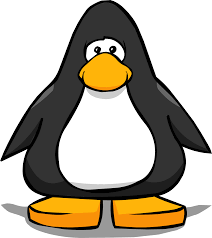

Club Penguin was a massively multiplayer online game (MMO), involving a virtual world that contained a range of online games and activities. It was created by New Horizon Interactive (now known as Disney Canada Inc.). Players used cartoon penguin-avatars and played in a winter-set virtual world. After beta-testing, Club Penguin was made available to the general public on October 24, 2005, and expanded into a large online community, such that by late 2007, it was claimed Club Penguin had over 30 million user accounts.In July 2013, Club Penguin had over 200 million registered user accounts.